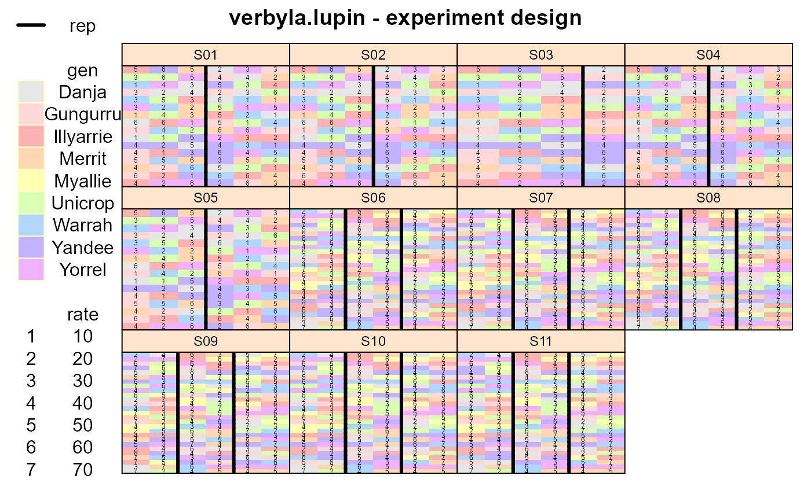
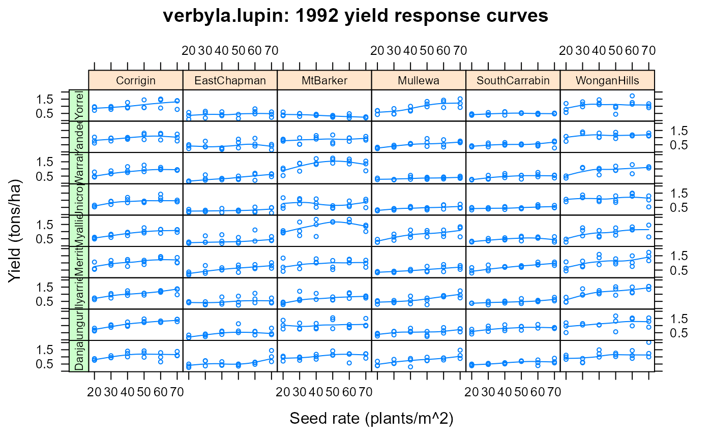

verbyla.lupin.RdYield of 9 varieties of lupin at different planting densities across 2 years and multiple locations.
gengenotype, 9 varieties
sitesite, 11 levels
reprep, 2-3 levels
rateseeding rate in plants/m^2
rowrow
colcolumn
serpfactor of 4 levels for serpentine seeding effect
linrowcentered row position as a numeric variate (row-8.5)/10
lincolcentered column position as a numeric variate (col-3.5)
linratelinear effect of seedrate, scaled (seedrate-41.92958)/10
yieldyield in tons/hectare
yearyear, 1991-1992
loclocation
Nine varieties of lupin were tested for yield response to plant density at 11 sites. The target density in 1991 was 10, 20, ..., 60 plants per m^2, and in 1992 was 20, 30, ..., 70 plants per m^2.
Plot dimensions are not given.
The variety Myallie was grown only in 1992.
Each site had 2 reps in 1991 and 3 reps in 1992. Each rep was laid out as a factorial RCB design; one randomization was used for all sites in 1991 and one (different) randomization was used for all sites in 1992. (This was confirmed with the principal investigator.)
In 1991 at the Mt. Barker location, the data for columns 5 and 6 was discarded due to problems with weeds.
Variety 'Myallie' was called '84L:439' in Verbyla 1997.
The year of release for the varieties is
| Unicrop | 1973 |
| Illyarrie | 1979 |
| Yandee | 1980 |
| Danja | 1986 |
| Gungurru | 1988 |
| Yorrel | 1989 |
| Warrah | 1989 |
| Merrit | 1991 |
| Myallie | 1995 |
Arunas P. Verbyla and Brian R. Cullis and Michael G. Kenward and Sue J. Welham, (1999). The analysis of designed experiments and longitudinal data by using smoothing splines. Appl. Statist., 48, 269--311. http://doi.org/10.1111/1467-9876.00154
Arunas P. Verbyla and Brian R. Cullis and Michael G. Kenward and Sue J. Welham, (1997). The analysis of designed experiments and longitudinal data by using smoothing splines. University of Adelaide, Department of Statistics, Research Report 97/4. http://http://citeseerx.ist.psu.edu/viewdoc/summary?doi=10.1.1.56.808
Data retrieved Oct 2010 from http://www.blackwellpublishers.co.uk/rss. (No longer available).
Used with permission of Blackwell Publishing.
library(agridat) data(verbyla.lupin) dat <- verbyla.lupin # The same RCB randomization was used at all sites in each year libs(desplot) desplot(gen~col+row|site, data=dat, out1=rep, num=rate, # aspect unknown main="verbyla.lupin - experiment design")# Figure 3 of Verbyla libs(lattice) foo <- xyplot(yield ~ rate|loc*gen, data=dat, subset=year==92, type=c('p','smooth'), cex=.5, main="verbyla.lupin: 1992 yield response curves", xlab="Seed rate (plants/m^2)", ylab="Yield (tons/ha)", strip=strip.custom(par.strip.text=list(cex=.7))) libs(latticeExtra) # for useOuterStrips useOuterStrips(foo, strip=strip.custom(par.strip.text=list(cex=.7)), strip.left=strip.custom(par.strip.text=list(cex=.7)))# ---------------------------------------------------------------------------- if(0){ # We try to reproduce the analysis of Verbyla 1999. # May not be exactly the same, but is pretty close. # Check nlevels for size of random-coefficient structures length(with(dat, table(gen))) # 9 varieties for RC1 length(with(dat, table(gen,site))) # 99 site:gen combinations for RC2 # Make row and col into factors dat <- transform(dat, colf=factor(col), rowf=factor(row)) # sort for asreml dat <- dat[order(dat$site, dat$rowf, dat$colf),] # Make site names more useful for plots dat <- transform(dat, site=factor(paste0(year,".",substring(loc,1,4)))) # Initial model from top of Verbyla table 9. # libs(asreml4) # FIXME asreml4 This is not working in asreml4 ## m0 <- asreml(yield ~ 1 ## + site ## + linrate ## + site:linrate, ## data = dat, ## random = ~ spl(rate) ## + dev(rate) ## + site:spl(rate) ## + site:dev(rate) ## + str(~gen+gen:linrate, ~us(2):id(9)) # RC1 ## + gen:spl(rate) ## + gen:dev(rate) ## + str(~site:gen+site:gen:linrate, ~us(2):id(99)) # RC2 ## + site:gen:spl(rate) ## + site:gen:dev(rate), ## residual = ~ dsum( ~ ar1(rowf):ar1(colf)|site) # Spatial AR1 x AR1 ## ) ## m0 <- update(m0) ## m0 <- update(m0) # to get convergence ## # Variograms match Verbyla 1999 figure 7 (scale slightly different) ## plot(varioGram(m0), xlim=c(1:19), zlim=c(0,2), ## main="verbyla.lupin - variogram by site") ## # Sequence of models in Verbyla 1999 table 10 ## m1 <- update(m0, fixed= ~ . ## + at(site, c(2,5,6,8,9,10)):lincol ## + at(site, c(3,5,7,8)):linrow ## + at(site, c(2,3,5,7,8,9,11)):serp ## , random = ~ . ## + at(site, c(3,6,7,9)):rowf ## + at(site, c(1,2,3,9,10)):colf ## + at(site, c(5,7,8,10)):units) ## m1 <- update(m1) ## m2 <- update(m1, ## random = ~ . ## - site:gen:spl(rate) - site:gen:dev(rate)) ## m3 <- update(m2, ## random = ~ . ## - site:dev(rate) - gen:dev(rate)) ## m4 <- update(m3, ## random = ~ . ## - dev(rate)) ## m5 <- update(m4, ## random = ~ . ## - at(site, c(5,7,8,10)):units + at(site, c(5,7,8)):units) ## # Variance components are a pretty good match to Verbyla 1997, table 15 ## libs(lucid) ## vc(m5) ## .001004/sqrt(.005446*.0003662) # .711 correlation for RC1 ## .00175/sqrt(.01881*.000167) # .987 correlation for RC2 ## # Matches Verbyla 1999 figure 5 ## plot(varioGram(m5), ## main="verbyla.lupin - final model variograms", ## xlim=c(1:19), zlim=c(0,1.5)) }